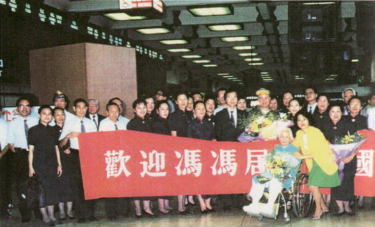

至诚的感恩
冯冯
《冯冯居士返国义演》之一
从加拿大回到阔别三十年的台湾，我于六月十四、十五两日，
在台北国父纪念馆演出两场“圣乐发表慈善晚会”，
为国内孤儿院筹募基金；
假如这次慈善晚会还算是幸不辱命，
把爱心带给那些失去父母、亲人的孤儿，
略有助于抚慰及鼓励那些孤雏的心灵，
那么，这些功德，都是大家的辛劳成就！
我并不能代表孤儿们向众人致谢，但是，我知道，

我与孩子们都会感恩你们！
一九九四年六月十日，我终于偕家母乘华信五○一号班机，回到了睽别三十年之久的祖国──中华民国；近乡情更怯，飞机着陆之时，我早已热泪满颊了！
台湾是我的心灵故乡，是我少年时代成长的地方。我祖籍虽在大陆，却从未居住过大陆，我可说是在台湾长大的。去国三十年，不时在梦中怀念着台湾的一切，梦中所见的人，是当年在台湾的好友；梦中所见的景物，是台湾的乡村和都市。当年贫穷潦倒的少年，在台湾没有什么值得回亿的个人经历，有的只是辛酸血泪的生活挣扎而已，常在梦中重温往事，好像每一片辛酸往事都是那么珍贵，令人回味不已。
三十多年前，与我一同踏着赤脚、身穿破旧单衣上学的台湾小孩，如今多已成家立业，事业有成，更有不少献身回馈社会的慈善工作，看到那些跨国公司的主人，谁会料到他们幼年时代穷到没钱买鞋子，在风雨交加的日子，赤脚踏着泥泞的路去上学？小小便当盒内只有一些冷饭、一片黄萝卜、两片菜干，连半只咸蛋都是奢侈品！谁料到他们会有今天的伟大事业成就？谁料得到他们竟会成为今日台湾经济的主要力量？
三十年不是很短的时间，人生有几个三十年？台湾居民经过三十年的艰苦努力奋斗，才会有今天的国际经济大国地位，成为全世界数一数二的富裕社会，也成为援助开发中国家的国家之一──举凡对非洲、对大陆、对中南美洲的救灾，都有具体的表现。要一一列举台湾的慈善重大贡献机构（它们各有特殊贡献），恐无法遍举，亦诚然有挂一漏万之虞。就我个人最大荣幸的接触来说，我最熟知的乃是“慈济功德会”。
十年来的接触，举凡慈济建设的医院、护专、医学院、济贫病、巡回医疗队、救灾大陆、建宅设校……种种慈济救济与弘法教育，无不为世人所景仰，非唯徒得我心；谁料到慈济二十多年前筹设之初，只是当时尚藉藉无名的贫穷的比丘证严法师，带领他们的弟子们做小孩鞋子加工，赚取微薄的金钱，并且在花莲市场向主妇募化一天五毛钱菜金作为慈善济助之用？
十年前我已在拙文中预言慈济在证严上人事必躬亲的深入贫苦疾病群众去服务与救济，这种忘我无私态度的领导之下，“慈济人”人人效法此种精神，必会渐渐成为一支新兴的国际慈善生力军，将可比美国红十字会及德蕾莎修女。
现在看来，慈济的国际脚步，进展得比我预料更快！
与“慈济人”素未谋面者居多，也从未有幸得亲近证严上人的教诲，此次三十年来首次回国，终于获得这分殊荣去参拜证严上人与慈济人，见到久仰已久的上人，和他以观音菩萨般大慈大悲的悲愿所成就的慈济医院、学校伟业，渺小的我，该有多么荣幸、多么感动，又多么自惭形秽呢？
我是最怕旅行的人，年轻时喜欢旅行，东跑西跑；到了中年，就不爱动了，只想安静，这是我三十年不曾返国的主因。尤其是我既不能比他人那般学成归国或是业成荣归，三十多年在外国，笔耕维生勉可温饱而已，供奉慈母甘旨亦常感不适，要筹一笔旅费回国，谈何容易！因此向来不敢妄想回国一行。
此次回国的机缘是很特殊的，起因是一九九一年十月，得蒙证严上人指定代表他赴美国洛杉矶为慈济美国分会主持揭幕典礼，因为上人那时忙于筹建慈济医院及大陆救灾，分身乏术。美国分会执行长黄思贤居士与慈济同仁举行一场义演晚会，慈济合唱团从台北赶来登台，演唱慈济颂及我作的圣曲，我也粉墨登台献丑数曲。会场满座，自然是慈济人推票的结果（虽然我唱的不好，也并不妨碍），晚会后王端正先生口头对我多有赞美称许，并说若有机会，欢迎我回国，我“固所愿也，不敢请耳。”
三年来，我一直希望回国为慈济做一场筹款晚会，以达心愿。三年来的联络，才知在台湾做募款晚会有太多的法令限制，加之场所乏，税务的严格要求……
种种障碍，使得慈济难以主办晚会。慈济代表团于去年（一九九三）专程来访，告以一切困难。因此我乃去信给王端正先生，表示因缘未成熟暂时停办。王先生回信表示，确有很多现实困难，同意取消原议以待后缘。
失去为慈济义演的良机，我终日怏怏。去年冬天，圆山狮子会前届会长邱悦香小姐来访，她两年前曾代表我与慈济代表团讨论义演之事，所以颇能了解我的内衷，尤其能明白我最希望院义演筹募基金。她回国之后就与乃兄──现任该会会长邱文彬先生发起义演。也真亏了她，一介弱女，到处奔赴游说，居然争取到有关当局准许由狮子会主办；又去拜访统一公司等企业钜子，获得他们的赞助支持。邱悦香小姐辛劳备至，一一解决了种种障碍困难，使我由衷感谢！她大半年来请到的赞助者，包括：统一公司、大安工研食品、大黑松小俩口公司、双安公司、双雄开发公司、扬升高尔夫球场、复兴航空公司、济鸿企业公司；还有协办者：慈济功德会、梵音出版社、广兴文教基金会、家庭主妇杂志社；制作者：太艺文化公司（排名不分先后）。
由于此次要演奏的乐集，规模庞大，当年（一九九一年三月）在北京，就出动了中央交响乐团一百多人，外加合唱团一百多人，合计三百人之多。在台湾不容易召集那么庞大的阵容演出，因此我提议采用在洛杉矶的演出方式──播放中央乐团音乐带作为伴奏。但是邱小姐与主办小组认为在台北这个大都会演出，没有大场面是不能卖座的，仍以乐团及合唱团助演为宜。
在台湾要请乐团十分不容易，从一年前预约，几经困难曲折，邱小姐终于在五月初请到了世纪交响乐团、世纪合唱团，与燃灯合唱团联合演出我的拙作，合作有一百六十人之多。在台湾而言，这大场面也算罕见的了，这笔费用就支用了一百万元台币，几乎花费全部的赞助金。
接着的问题，比钱更麻烦。邱小姐去年去北京时，曾代我向中央乐团取回我的圣乐曲谱，她不是学音乐出身的人，自然也不知道什么是总“总谱”什么是“分谱”，北京给她什么，她就带什么回来。直到此时，世纪乐团告诉她，只有“总谱”并无“分谱”，又说抄分谱就需三个月，叫我想法子，否则不可能在六月份演出。要我赶抄当然可以，问题是，乐团人多，尚需抄三个月，那么我岂非得抄十年？
邱小姐与我，还有几位朋友，分别打电话去北京问取分谱，作曲家马丁先生跑了一趟中央乐团，答案是：事隔多年，分谱已失踪了，可能是被打扫工人当作垃圾丢掉了。
叫我怎么办？我提议“世纪”乐团采用影印总谱予以分别剪贴成为分谱──正是当前德国乐团常用的方法，可以在几天内弄妥──即是，全体团员共聚一堂，各人只剪取自己乐器的部分，贴在白纸上，再予以影印，就成为各乐器的分谱了。“世纪”有没采用我的建议？我不得而知！
有分谱没分谱，“世纪”乐团终于答应如期上演，只不过，交办时间太短，他们不可能练排全部十五首曲子，只能练一半。而他们练的歌，都是高音的，我这个男中音，没法唱，只好播放音乐来作我的伴奏了，而“世纪”与我也没有机会在一起排练，看来也唯有各自唯政了。听众必定觉得奇怪，可知这当中有许多困难？我希望大家予以原谅！
每晚与台湾通电话，讲到清晨四、五点，还不得休息，就是为上人这些筹备工作；大家都很屈从我，可是也有不太沟通的时候，举一例说，有人要求我上台勿化妆，勿穿华服，只是日常生活形象。我的天！我的日常打扮，台湾假如仍有讨饭叫化子，都会比我穿得好些！我怎能以破衣褴褛上台亮相？
又有人说，海报只刊登我的家居生活照片，以示朴实，我说：女明星的海报，化妆唯恐不够美不足以吸引人，可有在厨房洗碗的黄脸婆照片做海报的？男人照片，本来就已经不吸引人，再把我的秃头白发破衣鹑结照片一登，这海报能吸引人来观赏，才怪！
海报文字早已印好，只等照片，我赶快飞邮寄上自以为“尚可一看”的照片补上海报去，这时候已是五月廿六日了，海报才能够出笼。只有二十多天，怎么能销售那五千张票？邱小姐与她的狮子会朋友，不知能否推销得票子呢？从来，谁做音乐会不是半年前就开始卖票，我们这时候，只有二十天，怎能卖得完票？不由我不担忧！除了祈求观音菩萨，我也别无可以依靠的了！等着冷场吧！
五月二十七日，“慈济”的李金婺小姐打电话来，证严上人知道了晚会这件事，就召集慈济委员们一百多人，向大家指示，慈济人不应有分别心，应该全力支持冯冯居士的慈善筹款赞助孤儿们，慈济人应该立即行动，出动全体去为晚会推销票子，及派出慈诚队为晚会维持秩序与服务。
听到李小姐这么说，我早已感极而泣！感谢证严上人以这样无私忘我的慈悲心来支持我，慈济人这样无“分别心”，真正是做到了“无缘大慈，同体大悲”！上人在我现在最危急的关头，指示慈济人全体出动来支持我，看来不至于两夜演出都“冷场”到小猫两、三只了。狮子会的各地会友虽然也都出动售票，但毕竟国父纪念馆有两千多个座位，冯冯又不歌唱家，又不是歌星明星呢！
这一次，晚会若算成功，可说是深深感恩于慈济人秉承师训危拔刀相，同时也感恩狮子会各地会员的大力支持，我想，若没有狮会与慈济的支持，我必须辜负了各位赞助人的厚爱。
千言万语，说不尽对慈济与狮会的感恩！当然，也同样感恩新闻传播媒体的大力支持，感恩学知出版社董事长林金传先生与梵音出版社董事长朱振祥先生，两位素昧生平的热心人士分别捐印不同的海报，及分别发行我音响作曲的音带与ＣＤ，“家庭主妇”月刊的特别介绍我的晚会，皇冠杂志也有专文介绍我这个落伍的作家。我也更应该感谢各位热心人士，不辞劳苦地到处为晚会推销票子。
假如此次晚会还算是幸不辱命，把爱心带给那些失去父母、亲人的孤儿，略为有助于抚慰及鼓励那些孤雏的心灵，那么，这些功德，都是属于上述的社团与热心人士的，这是你们全体大家的辛劳成就！就算我们此次筹不到很多钱，至少我们一起合作来把这分诚恳的爱的信息带给了孤儿们，让他们感到人间仍有温暖，这对于他们的未来前途，是有长远的影响力的。我并不能代表孤儿们向你们致谢，但是，我知道孩子们会感谢您！我自己更是竭诚地感恩你们！

原载《慈济》第332期：1994年7月25日
http://taipei.tzuchi.org.tw/monthly/332/332c11-2.htm